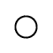
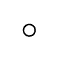

AIR CONDITIONING SYSTEM > DETAILS |
| SYSTEM CONTROL |
The air conditioning system uses the following controls:
| Control | Outline |
| Neural Network Control | This control is capable of effecting complex control by artificially simulating the information processing method of the nervous system of living organisms in order to establish a complex input/output relationship that is similar to that of a human brain. |
| Automatic Recirculation Control | Automatically changes the air inlet mode to fresh air or recirculate mode in accordance with the level of harmful elements in the outside air, cabin temperature, and outside temperature. |
| Changes the sensitivity of the smog ventilation sensor. | |
| Pollen Removal Mode Control | Activated by the pollen removal mode switch operation. Switches the air outlet to the FACE mode. Sends air which has passed through the clean air filter to the area around the upper part of the bodies of the driver and front passenger. This air is filtered by the clean air filter in order to remove pollen. |
| Outlet Air Temperature Control | Based on the temperature set at the temperature control switch, the neural network control calculates the outlet air temperature based on the input signals from various sensors. |
| The temperature settings for the driver and front passenger are controlled independently in order to provide a separate vehicle interior temperature for the right and left sides of the vehicle. As a result, air conditioning control that accommodates occupant preferences has been achieved. | |
| Blower Control | Controls the blower motor in accordance with the airflow volume that has been calculated by the neural network control based on the input signals from various sensors. |
| Automatically increases the blower level when the defroster is on. | |
| Air Outlet Control | Automatically switches the air outlets in accordance with the outlet mode that has been calculated by the neural network control based on the input signals from various sensors. |
| Air Inlet Control | Automatically controls the air inlet control damper in accordance with the airflow volume that has been calculated by the neural network control. |
| Automatically switches between fresh air/recirculation in conjunction with the set temperature while the automatic air conditioning is operating. | |
| Cooler Compressor Control | Controls the blower motor in accordance with the airflow volume that has been calculated by the neural network control based on the input signals from various sensors. |
| Memory Call Control | Memorizes the last front and rear air conditioning settings when the engine switch is turned from on to off in accordance with the ID code of the key that is used to operate the vehicle. The memory call control then recalls the settings if the key is used when the engine switch is turned on. This function operates when both of the following conditions are met:
|
| Rear Window Defogger Control |
|
| Self-diagnosis | Checks the sensors in accordance with the operation of the air conditioning switches, then displays a Diagnosis Trouble Code (DTC) on the clock to indicate if there is a malfunction or not (sensor check function). |
| Customization | Some functions can be customized. For details, refer to the corresponding Repair Manual for this model. |
Neural Network Control
In the previous automatic air conditioning system, the air conditioning amplifier assembly determined the required outlet air temperature and blower air volume in accordance with a calculation formula that had been obtained based on information received from the sensors. However, because the sensors of a person are rather complex, a given temperature is sensed differently, depending on the environment in which the person is situated. For example, a given amount of solar radiation can feel comfortably warm in a cold climate, but extremely uncomfortable in a hot climate. Therefore, as a technique for effecting a high level of control, a neural network is used in the automatic air conditioning system. With this technique, the data that has been collected under varying environmental conditions is stored in the air conditioning amplifier assembly, which effects control to provide enhanced air conditioning comfort.
The neural network control consists of neurons in an input layer, an intermediate layer, and an output layer. The input layer neurons process the input data of the ambient temperature, the amount of sunlight, and the room temperature based on the outputs of the switches and sensors, and output them to the intermediate layer neurons. Based on this data, the intermediate layer neurons adjust the strength of the links among the neurons. The sum of this data is then calculated by the output layer neurons in the form of the required outlet temperature, solar correction, target airflow volume, and outlet mode control volume. Accordingly, the air conditioning amplifier assembly controls the servo motors and blower with fan motor sub-assembly in accordance with the control volumes that have been calculated by the neural network control.
Automatic Recirculation Control
When the automatic recirculation control is operating, the air conditioning amplifier assembly automatically changes air inlet mode to fresh air or recirculate air mode based on signals from the smog ventilation sensor, outside temperature, and room temperature sensors when AUTO air inlet mode is selected.
Memory Call Control
The air conditioning amplifier assembly stores the front and rear air conditioning settings for each memory number when the engine switch is turned off.
The main body ECU converts the key ID code into a memory number, stores it and sends the converted signal to the air conditioning amplifier assembly.
The air conditioning amplifier assembly stores the memory number and air conditioning settings.
When the doors are unlocked, the certification ECU recognizes the key ID code and sends the key ID code to the main body ECU.
Upon receiving the key ID code signal, the main body ECU converts the signal into a memory number signal and sends it to the air conditioning amplifier assembly.
The air conditioning amplifier assembly then recalls the stored air conditioning settings based on the memory number signal when the engine switch is turned on (IG).
The following air conditioning system settings can be memorized:
| Setting | Condition | |
| Air Conditioning Switch | On or Off | |
| AUTO Switch | On or Off | |
| Temperature Setting | Driver | LO,16 to 32°C (65 to 85°F) or HI |
| Front Passenger | LO,16 to 32°C (65 to 85°F) or HI | |
| Blower Fan Speed | Level 1 to 7 | |
| Air Inlet Mode | Fresh or Recirculate | |
| Air Outlet Mode | Face, Bi-Level, Foot, Foot and Defroster or Defroster | |
| Dual Switch | On or Off | |
The following rear air conditioning system settings can be memorized:
| Setting | Condition |
| Air Conditioning Switch | On or Off |
| AUTO Switch | On or Off |
| Temperature Setting | LO,16 to 32°C (65 to 85°F) or HI |
| Blower Fan Speed | Level 1 to 7 |
Pollen Removal Mode Control
When the pollen removal mode switch is pressed, the pollen removal mode control is activated. Then, the air outlet is switched to the FACE mode and recirculated pollen-free air flows in the area around the upper part of the bodies of the driver and front passenger.
| CONSTRUCTION |
Air Conditioning Control Assembly
Front Air Conditioning Control Assembly
| *A | Models with Display and Navigation Module Display | *B | Models without Display and Navigation Module Display |
Rear Air Conditioning Control Assembly
Air Conditioning Unit
The air conditioning unit consists of the No. 1 cooler evaporator sub-assembly, heater radiator unit sub-assembly, servomotors, front No. 1 cooler thermistor and blower with fan motor sub-assembly.
A semi-central location air conditioning unit, in which the No. 1 cooler evaporator sub-assembly and heater radiator unit sub-assembly are placed in the vehicle's longitudinal direction, is used.
| *1 | No. 1 Cooler Evaporator Sub-assembly | *2 | Heater Radiator Unit Sub-assembly |
 | Front | - | - |
No. 1 Cooler Evaporator Sub-assembly
A Revolutionary super-slim Structure (RS) evaporator is used. By placing the tanks at the top and the bottom of the No. 1 cooler evaporator sub-assembly and by using a micropore tube construction, the following effects have been achieved:
| *1 | Tank | *2 | Micropore Tube |
| *3 | Cooling Fin | - | - |
Front No. 1 Cooler Thermistor
The front No. 1 cooler thermistor detects the temperature of the cool air immediately past the No. 1 cooler evaporator sub-assembly in the form of resistance changes, and outputs it to the air conditioning amplifier assembly.
Heater Radiator Unit Sub-assembly
This heater radiator unit sub-assembly has been made compact and performance has been improved by making the core section finer and improving the shapes of the tank section and flow section. Also, the environment has been considered. By using aluminum as the material, the amount of the environmental burden disposal (lead) has been reduced.
Blower with Fan Motor Sub-assembly
The blower with fan motor sub-assembly has a built-in blower controller, and is controlled using duty control performed by the air conditioning amplifier assembly.
Bus Connector
The bus connector has a built-in communication/driver IC, which communicates with each servomotor connector, actuates the servomotor, and has a position detection function. This enables bus communication for the servomotor wire harness to achieve a more lightweight construction and a reduced number of wires.
Servomotor
In contrast to the previous type that detects the position by way of a potentiometer voltage, the pulse pattern type servomotor detects the relative position by way of the 2-bit on/off signals.
The forward and reverse revolutions of this motor are detected by way of 2 phases, A and B, which output 4 types of patterns. The air conditioning amplifier assembly counts the number of pulse patterns in order to determine the stopped position.
Clean Air Filter
A pollen removal type clean air filter is used to remove dust, pollen, and other micron particles from air entering from outside the vehicle to provide a comfortable cabin of clean air. The clean air filter is installed in the upper section of the blower fan.
| *1 | Clean Air Filter | - | - |
| Destination | Cleaning Interval | Replacement Interval | |
| Europe | Normal Condition | 15000 km (9000 miles) | 30000 km (18000 miles) |
| Dusty or Severe Condition | 7500 km (5000 miles) | 15000km (9000 miles) | |
| China and G.C.C. Countries | Normal Condition | Each 10000 km (Each 6000 miles) | 30000 km (18000 miles) |
| Dusty or Severe Condition | Each 5000 km (Each 3000 miles) | 15000 km (9000 miles) | |
Condenser Assembly
The sub-cool condenser is used. This is a multi-flow condenser consisting of 3 portions: a condensing portion, a super-cooling portion and a gas-liquid separator (modulator) all integrated together. This condenser assembly uses a sub-cool cycle for its cooling cycle system to improve heat-exchanging efficiency.
In the sub-cool cycle, after the refrigerant passes through the condensing portion of the condenser assembly, both the liquid refrigerant and the gaseous refrigerant that could not be liquefied are cooled again in the super-cooling portion. Thus, the refrigerant is sent to the No. 1 cooler evaporator sub-assembly in an almost completely liquefied state.
| *1 | Condensing Portion | *2 | Modulator |
| *3 | Desiccant | *4 | Filter |
| *5 | Super-cooling Portion | - | - |
| Gaseous Refrigerant |  | Liquid Refrigerant |
Cooler Compressor Assembly
A 10SR19 cooler compressor assembly has been provided, which features a compact, lightweight and low-noise swash plate design.
The cooler compressor assembly consists of the air conditioning pulley, shaft, lug plate, swash plate, piston, shoe, crank chamber, cylinder, and lock sensor.
The lock sensor sends a cooler compressor assembly speed signal to the air conditioning amplifier assembly. The air conditioning amplifier assembly compares this signal with an engine speed signal sent from the crankshaft position sensor. If the air conditioning amplifier assembly determines that the air conditioning pulley has locked, the air conditioning amplifier assembly turns the magnetic clutch off.
A rotary valve capable of directing suction refrigerant into the cylinder has been provided.
Rotary Valve
In order to eliminate suction loss, the rotary valve has been replaced with a conventional suction valve.
A hollow shaft is used in the valve so as to allow refrigerant to be sucked into the compressing section of the cylinder through the hollow section. Holes individually arranged on the shaft and cylinder are designed to align during the rotation of the shaft. When the holes are aligned, refrigerant is sucked into the compressing section.
| *1 | Piston | *2 | Shaft |
| *3 | Lug Plate | *4 | Housing |
| *5 | Suction Section | *6 | Compressing Section |
| *7 | Cylinder | *8 | Cylinder Bore |
| *9 | Cylinder Suction Passage | *10 | Rotary Valve Suction Port |
| *a | Refrigerant Flow | *b | Position where Rotary Valve Suction Port and Cylinder Suction Passage Become Aligned |
Cooler (Front Room Temperature Sensor) Thermistor
The cooler (front room temperature sensor) thermistor detects the front room temperature based on changes in the resistance of its built-in thermistor. This signal is used by the air conditioning amplifier assembly.
Cooler (Rear Room Temperature Sensor) Thermistor
The cooler (rear room temperature sensor) thermistor detects the rear room temperature based on changes in the resistance of its built-in thermistor. This signal is used by the air conditioning amplifier assembly.
Cooler (Ambient Temperature Sensor) Thermistor
The cooler (ambient temperature sensor) thermistor detects the ambient temperature based on changes in the resistance of its built-in thermistor. This signal is used by the air conditioning amplifier assembly.
Cooler (Solar Sensor) Thermistor
The cooler (solar sensor) thermistor consists of a photo diode, 2 amplifier circuits for the cooler (solar sensor) thermistor, and a frequency converter circuit for the automatic light control sensor.
The cooler (solar sensor) thermistor detects (in the form of changes in the current that flows through the built-in photo diode) the changes in the amount of sunlight from its LH and RH sides (2 directions) and outputs these sunlight strength signals to the air conditioning amplifier assembly.

Sub-cool Accelerator Type Tube
A sub-cool accelerator type tube is used to enhance air conditioning cooling performance. It functions as a heat exchanger by making use of the temperature difference between the gaseous refrigerant and liquid refrigerant.
The sub-cool accelerator type tube has a double-pipe construction. Helical grooves are embossed into the outer wall of the inner tube. Low-temperature and low-pressure gaseous refrigerant passes through the inner tube. High-temperature and high-pressure liquid refrigerant circulates between the inner tube and outer tube in the gap created by the grooves. Because of the temperature difference, heat exchange occurs.
The high-temperature and high-pressure liquid refrigerant circulate along the helical grooves causing the refrigerant to remain in contact with the outer wall of the inner tube for a longer period of time. This achieves an ample exchange of heat.
By lowering the temperature of the refrigerant that has passed through the cooler condenser, more liquid refrigerant is supplied to the evaporator and the evaporator is also kept cooler. This enables an enhanced air conditioning cooling effect.
Cool Box
The cool box consists primarily of a cool box amplifier, an evaporator (for cool box), a cool box blower motor, a cool box switch, and an expansion valve. The connected refrigerant circuit of the front air conditioning cools the cool box.
| *1 | Condenser Assembly | *2 | Cooler Compressor Assembly |
| *3 | Check Valve | *4 | No. 1 Cooler Evaporator Sub-assembly |
| *5 | No. 1 Cooler Evaporator Sub-assembly No.2 | *6 | Cool Box |
| *7 | Magnetic Valve | *8 | Cooler Expansion Valve |
| *9 | Rear Evaporator Sub-assembly | - | - |
| OPERATION |
Front Air Conditioning Mode Position and Damper Operation
| Control Damper | Operation Position | Damper Position | Operation | ||
| Air Inlet Control Damper | FRESH | A | Brings in fresh air. | ||
| RECIRC | B | Recirculates internal air. | |||
| Air Mix Control Damper | MAX COLD to MAX HOT Temp. Setting | E - D - C (E' - D' - C') | Varies the mixture ratio of the cold air and the hot air in order to regulate the temperature continuously from HOT to COLD | ||
| Max Cool Damper | Max Cool | V | Open in the MAX COOL position | ||
| Except Max Cool | W | Closed in all positions except MAX COOL position | |||
| Max Hot Damper | Max Hot | Y | Open in the MAX HOT position | ||
| Except Max Hot | X | Closed in all positions except MAX HOT position | |||
| Mode Control Damper | DEF | H, I, S, U, X | Defrosts the windshield through the center defroster, and side defroster | ||
| FOOT / DEF | Max Hot Position | H, K, R, T, W, Y | Defrosts the windshield through the center defroster, side defroster, front and rear footwell register ducts while air is also blown out from the front and rear center registers and side register. | ||
| Except Max Hot Position | H, M, Q, T, X | ||||
| FOOT | Max Hot Position | H, M, P, T, W, Y | Air blows out of the front and rear footwell register duct. In addition, air blows out slightly from the center register, side register, center defroster and side defroster. | ||
| Except Max Hot Position | H, M, O, T, X | ||||
| BI-LEVEL | G, L, N, T, X | Air blows out of the front center registers, side register, and front and rear footwell register ducts. | |||
| FACE | Auto Mode | F, J, N, T, X | Air blows out of the front center registers and side register. | ||
| Manual Mode | F, I, N, T, X | ||||
Rear Air Conditioning Mode Position and Damper Operation
| Control Damper | Operation Position | Damper Position | Operation | |
| Mode Control Door | FACE | A | Air blows out of the rear roof side register. | |
| BI-LEVEL | B | Air blows out of the rear roof side register and the rear footwell register. | ||
| FOOT | C | Air blows out of the rear footwell register. | ||
| Air Mix Control Damper | MAX COLD to MAX HOT Temp. Setting | D - E | Varies the mixture ratio of the cold air and the hot air in order to regulate the temperature continuously from HOT to COLD. | |
Front Air Outlets and Airflow Volume
| Indication | Mode | Section | A | B | C | D | E | |
| Auto | Manual | Center | Side | Front Footwell | Rear Footwell | Defroster | ||
| FACE-U | ● | ● |  | - | - | - | ||
| FACE-L* | ● | - |  |  | - | |||
| BI-LEVEL | ● | ● | - | |||||
| FOOT | ● | ● | ||||||
| FOOT/DEF | ● | ● | ||||||
| DEF | - | ● | - | - | - | - | ||
Rear Air Outlets and Airflow Volume
| Indication | Mode | A | B |
| FACE | - | ||
| BI-LEVEL | |||
| FOOT | - |
| DIAGNOSIS |
Diagnostic Trouble Code (DTC)
The air conditioning amplifier assembly has a self-diagnosis function. It stores any operation failures in the air conditioning system memory in the form of DTCs. For details, refer to the corresponding Repair Manual for this model.